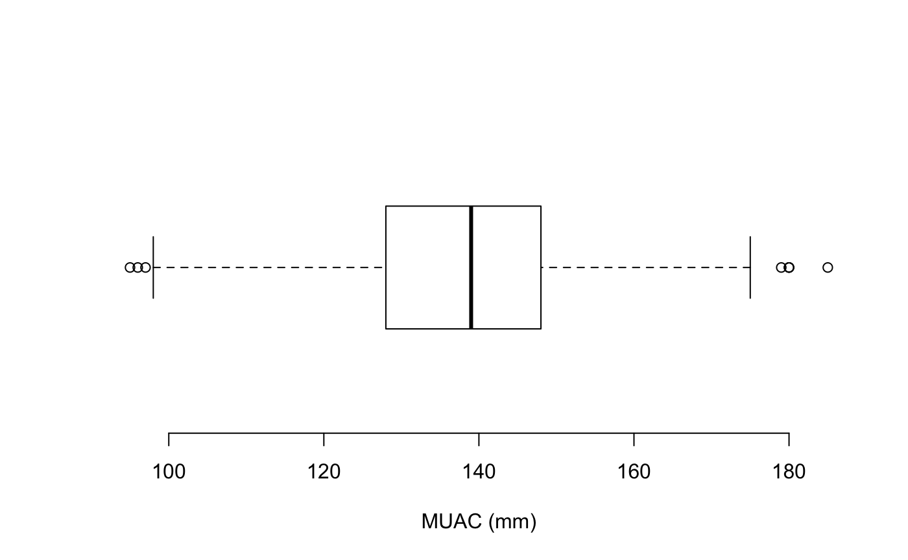

Checking that data are within an acceptable or plausible range is an important basic check to apply to quantitative data. Checking that data are recorded with appropriate legal values or codes is an important basic check to apply to categorical data.
We will use the dataset rl.ex01 that is included in the nipnTK package.
svy <- rl.ex01
head(svy)#> age sex weight height muac oedema
#> 1 12 2 6.7 68.5 148 2
#> 2 6 1 6.4 65.0 125 2
#> 3 6 2 6.5 65.6 125 2
#> 4 8 1 7.2 68.4 144 2
#> 5 12 M 6.1 65.4 114 2
#> 6 8 1 7.7 66.5 146 2The rl.ex01 dataset contains anthropometry data from a SMART survey from Angola.
We can use the summary() function to examine range (and other summary statistics) of a quantitative variable:
summary(svy$muac)This returns:
#> Min. 1st Qu. Median Mean 3rd Qu. Max.
#> 11.1 128.0 139.0 140.3 148.0 999.0A graphical examination can also be made:
boxplot(svy$muac, horizontal = TRUE, xlab = "MUAC (mm)", frame.plot = FALSE)The “whiskers” on the boxplot extend to 1.5 times the interquartile range from the ends of the box (i.e., the lower and upper quartiles). This is known as the inner fence. Data points that are outside the inner fence are considered to be mild outliers. The NiPN data quality toolkit provides an R language function outliersUV() that uses the same method to identify outliers:
svy[outliersUV(svy$muac), ]This returns:
#>
#> Univariate outliers : Lower fence = 98, Upper fence = 178
#> age sex weight height muac oedema
#> 33 24 1 9.8 74.5 180.0 2
#> 93 12 2 6.7 67.0 96.0 1
#> 126 16 2 9.0 74.6 999.0 2
#> 135 18 2 8.5 74.5 999.0 2
#> 194 24 M 7.0 75.0 95.0 2
#> 227 8 M 6.2 66.0 11.1 2
#> 253 35 2 7.6 75.6 97.0 2
#> 381 24 1 10.8 82.8 12.4 2
#> 501 36 2 15.5 93.4 185.0 2
#> 594 21 2 9.8 76.5 13.2 2
#> 714 59 2 18.9 98.5 180.0 2
#> 752 48 2 15.6 102.2 999.0 2
#> 756 59 1 19.4 101.1 180.0 2
#> 873 59 1 20.6 109.4 179.0 2We can count the number of outliers or use:
table(outliersUV(svy$muac))This returns:
#>
#> Univariate outliers : Lower fence = 98, Upper fence = 178
#>
#> FALSE TRUE
#> 892 14We can express this as a proportion:
prop.table(table(outliersUV(svy$muac)))This returns:
#>
#> Univariate outliers : Lower fence = 98, Upper fence = 178
#>
#> FALSE TRUE
#> 0.98454746 0.01545254You may find it easier to use percentages:
prop.table(table(outliersUV(svy$muac))) * 100This returns:
#>
#> Univariate outliers : Lower fence = 98, Upper fence = 178
#>
#> FALSE TRUE
#> 98.454746 1.545254Some of the muac values identified as potential outliers are possible muac values:
#>
#> Univariate outliers : Lower fence = 98, Upper fence = 178
#> age sex weight height muac oedema
#> 33 24 1 9.8 74.5 180.0 2
#> 93 12 2 6.7 67.0 96.0 1
#> 126 16 2 9.0 74.6 999.0 2
#> 135 18 2 8.5 74.5 999.0 2
#> 194 24 M 7.0 75.0 95.0 2
#> 227 8 M 6.2 66.0 11.1 2
#> 253 35 2 7.6 75.6 97.0 2
#> 381 24 1 10.8 82.8 12.4 2
#> 501 36 2 15.5 93.4 185.0 2
#> 594 21 2 9.8 76.5 13.2 2
#> 714 59 2 18.9 98.5 180.0 2
#> 752 48 2 15.6 102.2 999.0 2
#> 756 59 1 19.4 101.1 180.0 2
#> 873 59 1 20.6 109.4 179.0 2The outliersUV() function provides a fence parameter which alters the threshold at which a data point is considered to be an outlier.
The default fence = 1.5 defines the inner fence (i.e 1.5 times the interquartile range below the lower quartile and above the upper quartile). This will identify mild and severe outliers.
The value fence = 3 defines the outer fence (i.e 3 times the interquartile range below the lower quartile and above the upper quartile). This will identify severe outliers only:
svy[outliersUV(svy$muac, fence = 3), ]This returns:
#>
#> Univariate outliers : Lower fence = 68, Upper fence = 208
#> age sex weight height muac oedema
#> 126 16 2 9.0 74.6 999.0 2
#> 135 18 2 8.5 74.5 999.0 2
#> 227 8 M 6.2 66.0 11.1 2
#> 381 24 1 10.8 82.8 12.4 2
#> 594 21 2 9.8 76.5 13.2 2
#> 752 48 2 15.6 102.2 999.0 2There is something wrong with all of these values of muac.
The intention was that the muac variable records mid-upper-arm-circumference (MUAC) in mm. There are some impossibly small (i.e. 11.1, 12.4, and 13.2) and impossibly large values (i.e. 999.0).
The three impossibly small values are probably due to data being recorded in cm rather than mm. It is probably safe to change these three values to 111, 124 and 132. It is easiest to do this each record separately:
svy$muac[svy$muac == 11.1] <- 111An alternative approach is to specify row numbers instead of values:
svy$muac[381] <- 124
svy$muac[594] <- 132The three 999.0 values are missing values coded as 999.0. It is safe to set these three values to missing using the special NA value:
svy$muac[svy$muac == 999.00] <- NARange checks should be repeated after editing the data to ensure that the problems have been fixed:
summary(svy$muac)
svy[outliersUV(svy$muac), ]
svy[outliersUV(svy$muac, fence = 3), ]Following is a boxplot of the muac variable made using:
boxplot(svy$muac, horizontal = TRUE, xlab = "MUAC (mm)", frame.plot = FALSE)after the fixes for incorrectly entered data and missing values were made.

There should now be no severe outliers:
prop.table(table(outliersUV(svy$muac, fence = 3))) * 100returns:
#>
#> Univariate outliers : Lower fence = 68, Upper fence = 208
#>
#> FALSE
#> 100It is usually better to identify and edit only the most extreme univariate outliers, as we have done here, and use the scatterplot and statistical distance methods described elsewhere in this toolkit to identify other potential outliers.
We have edited records with outliers at the R command line.
It is a good idea to edit data at the command line or using a script containing the required commands.
A script provides a record of changes made to the data.
R also keeps a record of whatever you do at the command line in a “history file”. The history file is a plain text file which is usually called .Rhistory and stored in your home directory.
Some regulatory authorities require you to keep a history file.
Some publications may require you to provide a “reproducible data analysis”. This could be an edited and annotated copy of your history file.
The edit() function provides a basic tool for editing data interactively.
Editing data using the edit() function is typically a three stage process:
Create a new object containing only the data that requires editing.
Use the edit() function to edit data in the new object closing the data editor window when you are finished.
Replace the old records with the edited records.
We will try this using a separate copy of the example data:
x <- rl.ex01
records2update <- x[outliersUV(x$muac, fence = 3), ]
records2update <- edit(records2update)
x[row.names(records2update), ] <- records2updateWe can check that the edits have been made using:
#>
#> Univariate outliers : Lower fence = 68, Upper fence = 208
x[outliersUV(x$muac, fence = 3), ]If you have fixed the problems in the data this should return:
#>
#> Univariate outliers : Lower fence = 68, Upper fence = 208
#> age sex weight height muac oedema
#> 126 16 2 9.0 74.6 999.0 2
#> 135 18 2 8.5 74.5 999.0 2
#> 227 8 M 6.2 66.0 11.1 2
#> 381 24 1 10.8 82.8 12.4 2
#> 594 21 2 9.8 76.5 13.2 2
#> 752 48 2 15.6 102.2 999.0 2The edit() function works differently on different operating systems and with different graphical user interfaces. If you are using RStudio or RAnalyticFlow on OS X you will need to install XQuartz if you want to use the edit() function. XQuartz is available from:
We can use the table() function to examine the codes used in categorical variables. For example:
table(svy$sex)returns:
#>
#> 1 2 3 F M
#> 404 458 1 24 19The intention was that the sex variable was coded using 1 for male and 2 for female but in a small number of records the codes M for male and F for female have been used. A mixed coding scheme like this will complicate data-management and data-analysis. Data in the sex variable should be edited to ensure that consistent coding is used:
svy$sex[svy$sex == "M"] <- 1
svy$sex[svy$sex == "F"] <- 2You may find that a few records contain meaningless codes. The code 3 in the example dataset has, very probably, no meaning and is likely to be a simple data entry error. This record should be checked and corrected, if possible. If the record cannot be corrected then the sex variable should be set to missing:
svy$sex[svy$sex == 3] <- NALegal value checks should be repeated after editing to ensure that problems have been fixed:
table(svy$sex)now returns:
#>
#> 1 2 3 F M
#> 423 482 0 0 0The table contains cells for the values M, F, and 3 because R imported the variable as a categorical or “factor” variable:
str(svy)returns:
#> 'data.frame': 906 obs. of 6 variables:
#> $ age : int 12 6 6 8 12 8 18 9 12 12 ...
#> $ sex : Factor w/ 5 levels "1","2","3","F",..: 2 1 2 1 1 1 1 1 2 1 ...
#> $ weight: num 6.7 6.4 6.5 7.2 6.1 7.7 6.4 7.8 7.5 6.5 ...
#> $ height: num 68.5 65 65.6 68.4 65.4 66.5 66.7 65.3 69.1 70.3 ...
#> $ muac : num 148 125 125 144 114 146 119 140 138 121 ...
#> $ oedema: int 2 2 2 2 2 2 2 2 2 2 ...We can fix this by redefining the levels of the sex variable:
We have edited some data.
We usually want to save changes.
It is simple to save a dataset in a comma-separated-value (CSV) text file using the write.table() function:
write.table(x = svy, file = "rl.ex01.clean.csv", sep = ",", quote = FALSE,
row.names = FALSE, fileEncoding = "ASCII")R can work with a variety of files format but it is usually simplest to work with simple text files.